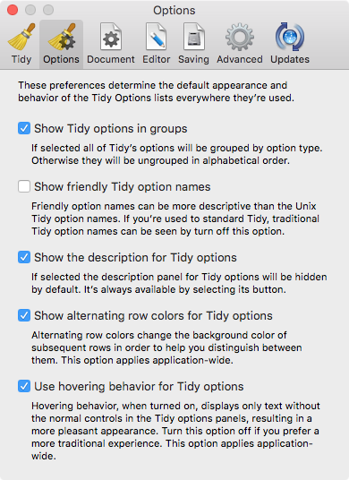
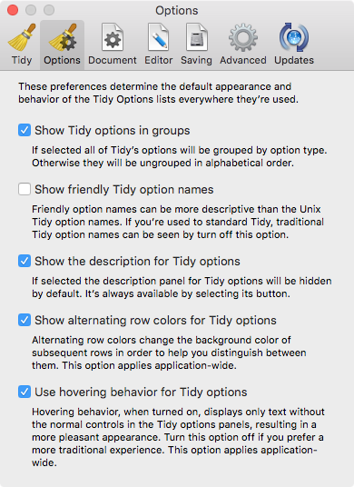

Options
The Options Preferences panel sets defaults options for the appearance of the Tidy Options panel next time a document window is opened, and also changes the global appearance of the Tidy Options panel.

The Options Preferences panel sets defaults options for the appearance of the Tidy Options panel next time a document window is opened, and also changes the global appearance of the Tidy Options panel.
